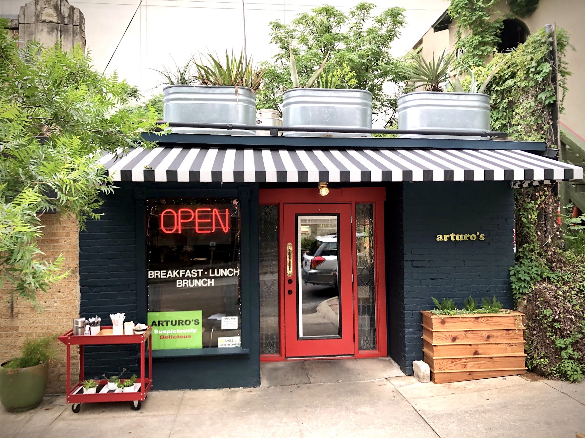
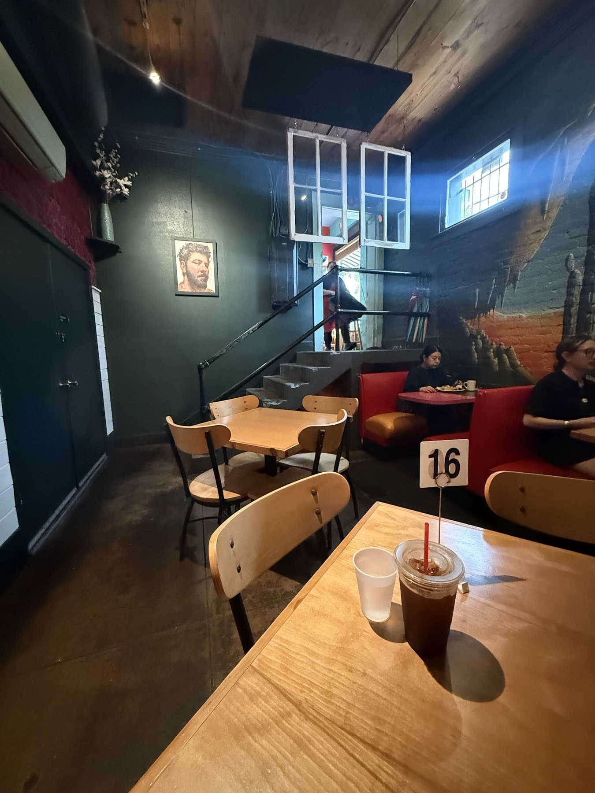
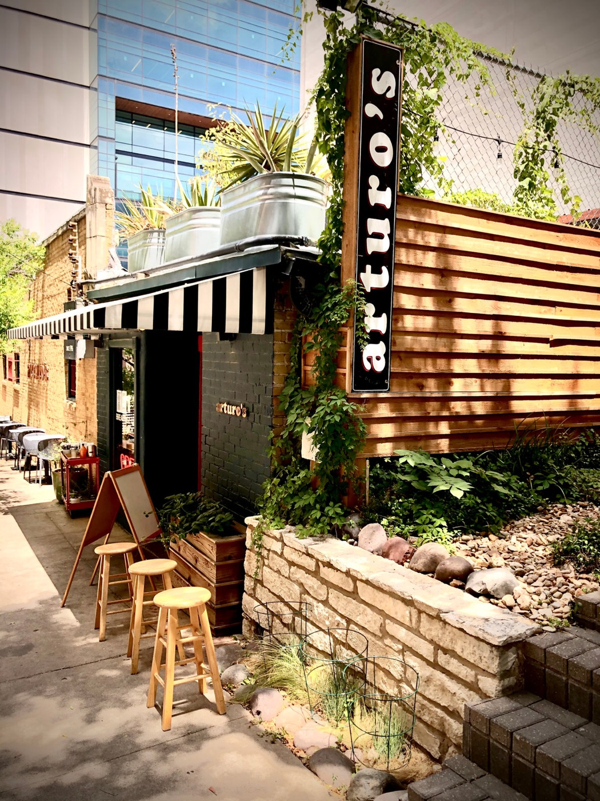
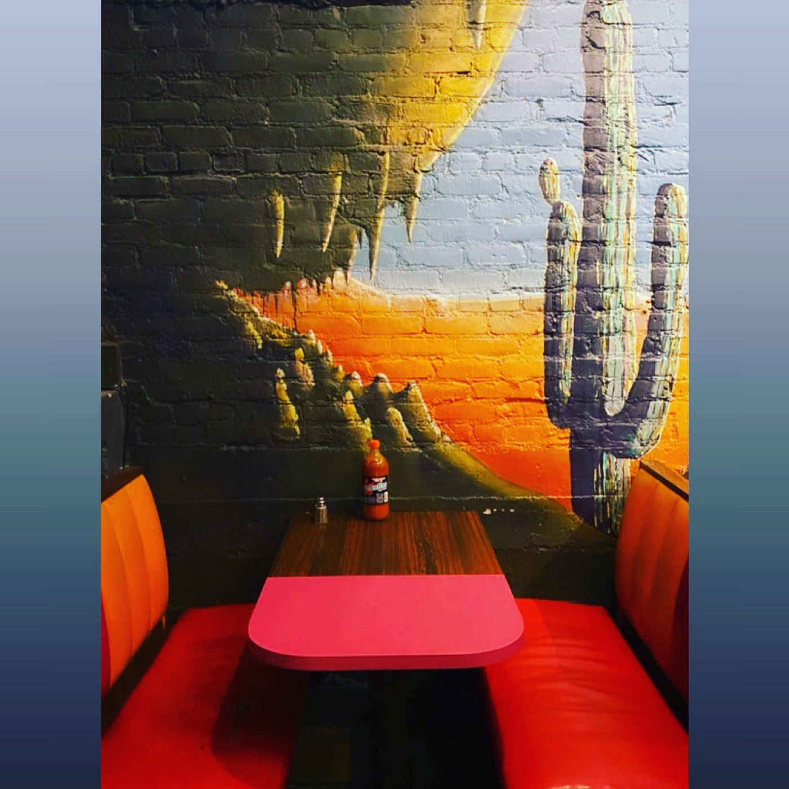
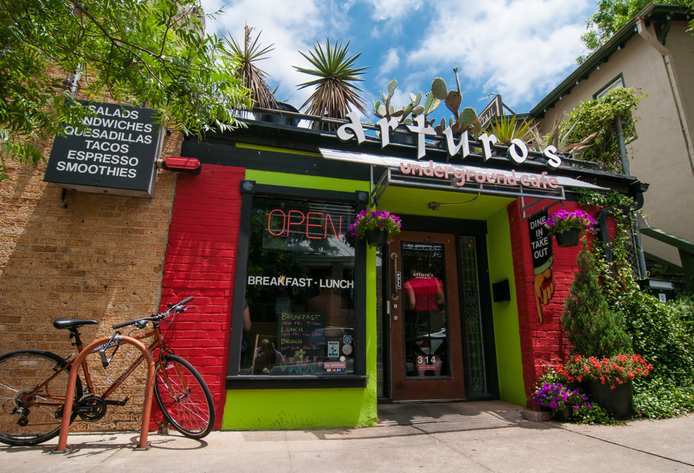
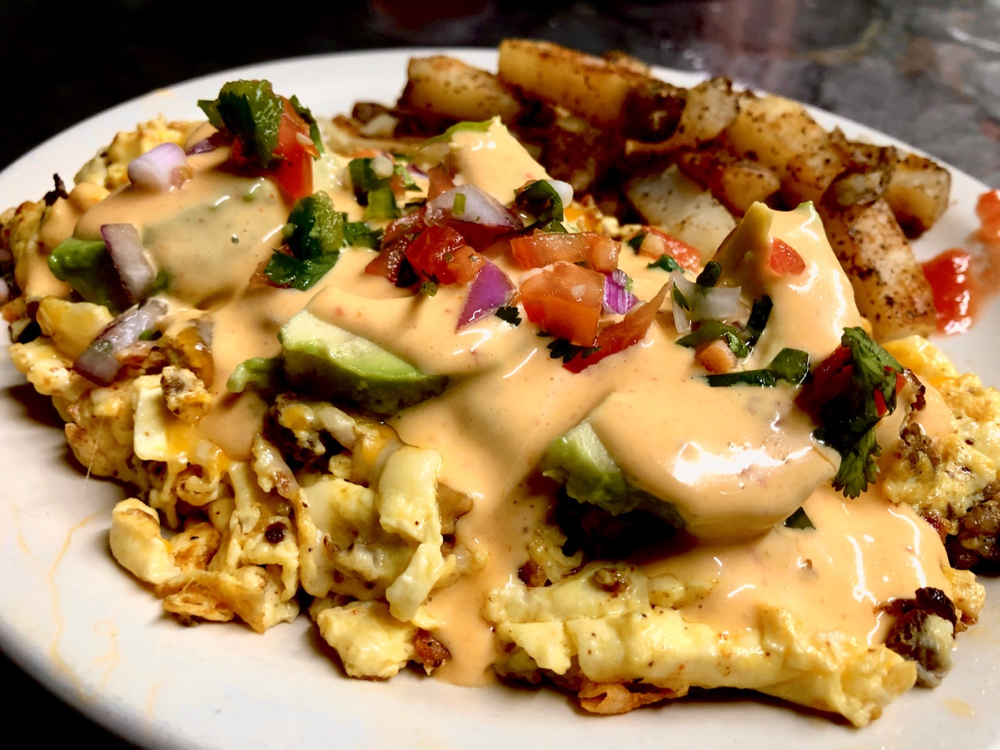
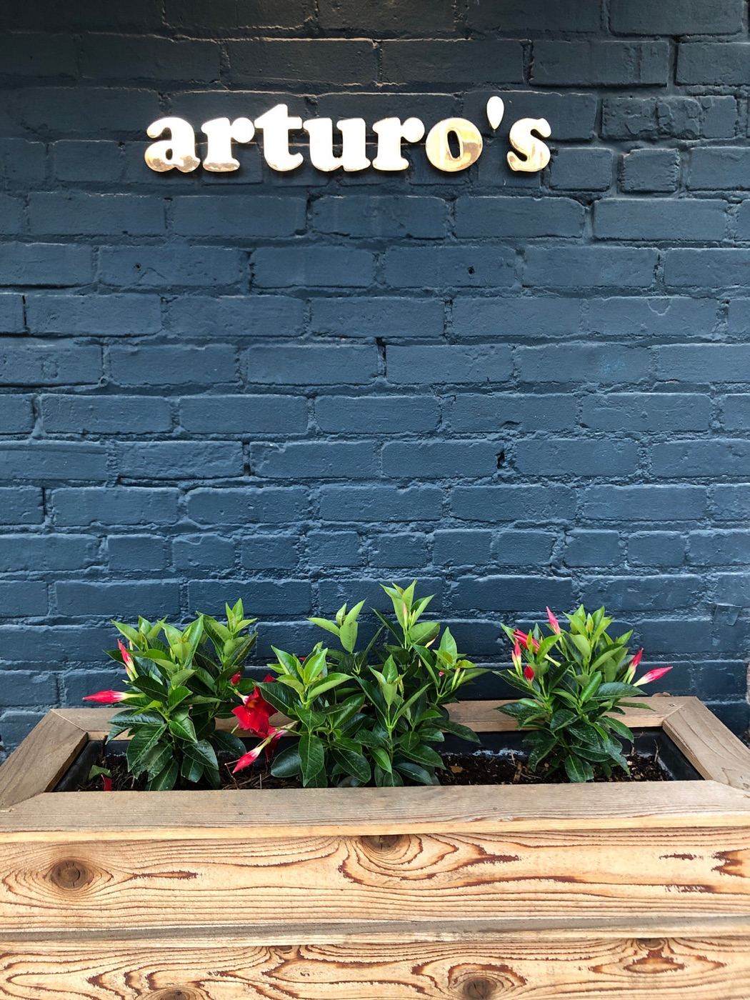
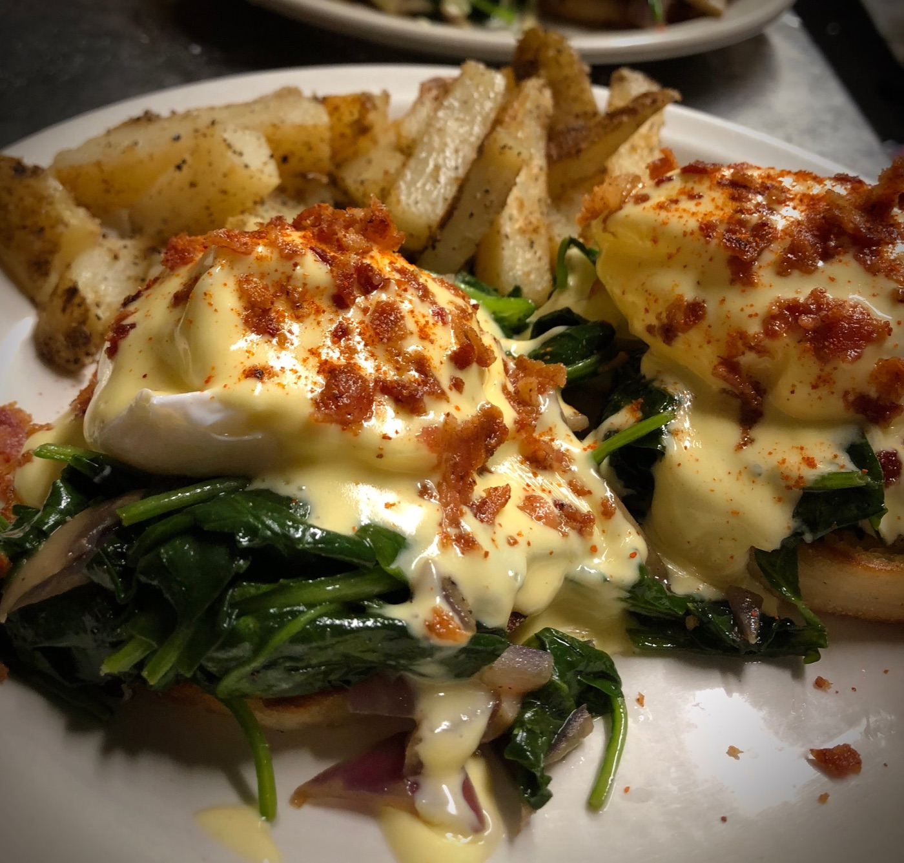
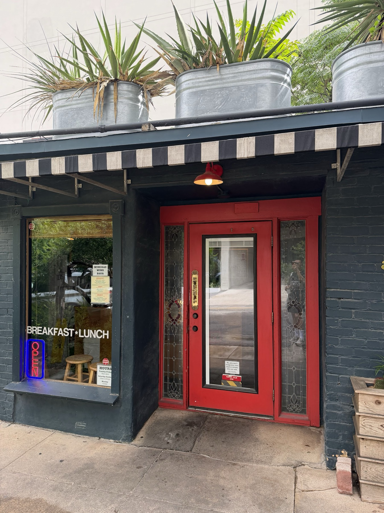

Texas benedicts
Seven house recipes, from the Chinati with slow-cooked pulled pork to the Alamo with chipotle hollandaise. Eggs benedict comes up in 42 Google reviews.
Eclectic Austin fare on W 17th St since 1996. Order at the counter, grab a seat downstairs, and we'll bring it to your table.

Our most-ordered dishes.
Seven house recipes, from the Chinati with slow-cooked pulled pork to the Alamo with chipotle hollandaise. Eggs benedict comes up in 42 Google reviews.

Eight of them, from Southwest chicken to Thai veggie, with black beans, rice and Arturo's salsa. Mentioned in 34 reviews.

French toast with grilled bananas, pecans and a warm caramel drizzle. Weekend brunch only.
Breakfast tacos and migas before work, a pesto chicken sandwich or a quesadilla at lunch, and on weekends the Texas benedicts: the Chinati, the Marfa, the Alamo and four more house recipes. Plus organic, fair trade espresso from Texas Coffee Traders, all day.

Arturo's has been serving eclectic Austin fare since 1996. Open only for breakfast and lunch, we're a neighborhood staple for the downtown office set, students and tourists alike.
Order at the counter, then head downstairs: pink pendant lamps, red booths, blonde-wood tables and a desert mural. A chill, cozy room to relax over a meal.













“Very chill vibe. Staff is super friendly. Luke was a terrific server. All the food was delicious, especially the French toast & Cuban sandwich.”
Valerie Vargas · Google“Great food options. Good coffee / latte. This time we had Migas & a side of bacon. Order at counter & it's delivered to your table. Seating is downstairs. Coffee station is upstairs near the counter.”
Haleh Liittjohann · Google“First time for lunch and had the chicken pesto sandwich. Delish! I will be back to try their quesadillas, heard good things about them. It's such a cozy nice vibe here.”
Analicia Perez · Google“Beautiful little place just about for anything. We had breakfast (Veggie Scramble) with a Cortado and Mocha Latte. Food is delicious. Coffee is amazing as well. Highly recommend.”
Krupal Patel · Google“Great brunch spot with delicious food and excellent service. The staff were friendly, attentive, and made us feel welcome. Cozy atmosphere and a perfect place to relax and enjoy a meal. Will definitely come back!”
Nguyên Châu · GoogleTopics Google pulls from our 1,081 reviews, with how many reviews bring each one up:
Breakfast Tuesday to Friday, 8am to 11am; lunch on weekdays, 11am to 2pm; weekend brunch Saturday and Sunday, 10am to 2:30pm (dine-in). Questions? Call (512) 469-0380.
Order at the counter upstairs and we'll bring your food to your table. The coffee station is up there too.
Most of the seating is downstairs, hence the name: red booths, wood tables and the mural.
Yes. Our weekend brunch, Saturday and Sunday from 10am to 2:30pm, is dine-in only. On weekdays you can order breakfast and lunch to go.
Plenty: the Veggie Scramble, Peace and Migas tacos, the Happy Hippy and Thai Grilled Veggie sandwiches, three veggie quesadillas, and the Florentina and Vegetariano benedicts at brunch. Look for the Veggie tag on the menu.
Sorry folks, we do not modify the Texas benedict recipes. Most other dishes have add-ons like avocado or bacon.
314 W 17th St, Austin, TX 78701, downtown between the Capitol and the UT campus.